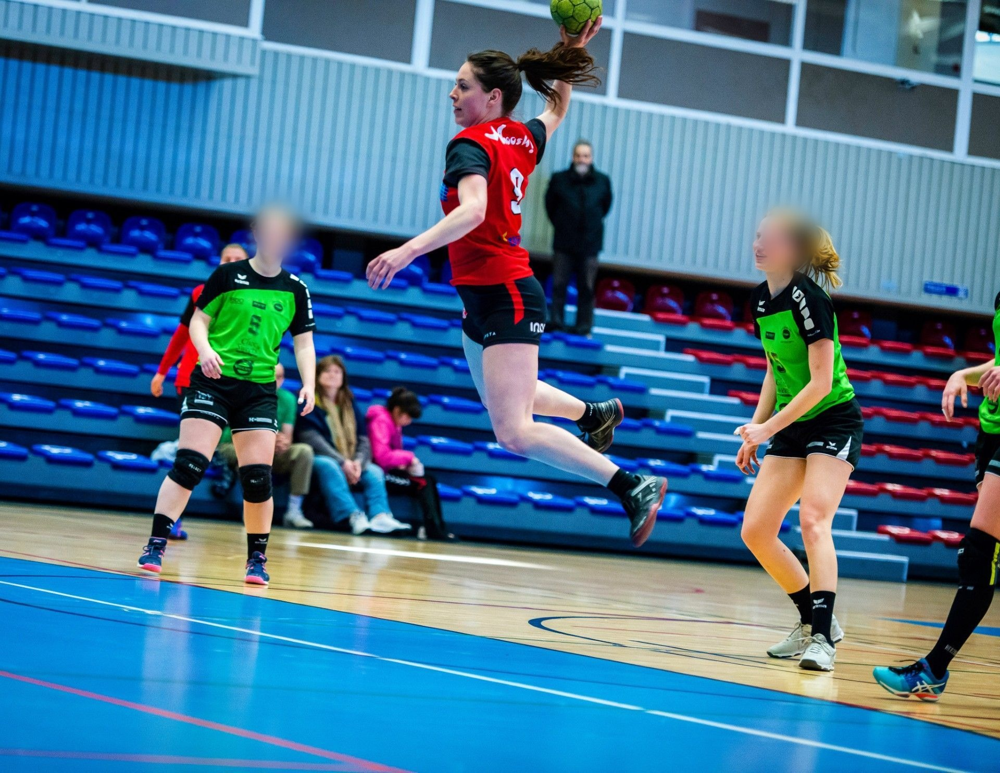

Sport én studie,
parallel begeleid.

Vanuit een passie voor sport begon mijn pad na de middelbare school op het CIOS. Al snel werd duidelijk dat mijn interesse verder ging dan het fysieke aspect van sport; mijn aandacht verschoof steeds meer naar de mentale en psychologische kant. Deze fascinatie vormde het startpunt voor mijn verdere studiekeuzes, waarin sport en psychologie steeds meer met elkaar samen zijn gekomen.
Na het CIOS verhuisde ik naar Antwerpen, waar ik mij verder verdiepte in de psychologie. Hier rondde ik zowel de bachelor Arbeids- en Organisatiepsychologie als de bachelor Klinische Psychologie af. Bij Sport Vlaanderen in Brussel maakte ik voor het eerst kennis met duale carrièrebegeleiding. De overtuiging dat een sporter méér is dan alleen prestaties, en ondersteuning nodig heeft in alle domeinen van het leven, liet mij sindsdien niet meer los.
Met de master Bewegingswetenschappen, gespecialiseerd in sportpsychologie, verdiepte ik mijn kennis verder. Mijn masterthesis bij KRC Genk richtte zich op de verwachtingen én de ervaren realiteit van de rolverdeling tussen school, sportclub en ouders in de begeleiding van (top)sporters. Juist in dat spanningsveld ontstaat de ruimte waar goede begeleiding het verschil maakt.
Het afronden van de NOLOC geaccrediteerde opleiding tot loopbaancoach vulde mijn studies aan met praktische handvatten voor individuele carrièrebegeleiding.
Naast mijn academische achtergrond heb ik zelf ervaren wat het vraagt om (top)sport te combineren met andere levensdomeinen. In Antwerpen speelde ik handbal op het hoogste niveau bij DHW United, waarna ik bij terugkomst in Nederland speelde in de eerste divisie bij MEOS in Nederweert. Deze ervaringen stellen mij in staat om mijn theoretische kennis te verbinden met de praktijk en mij goed te verplaatsen in de leefwereld van (top)sporters.

Mijn interesse in duale carrièrebegeleiding is in de afgelopen tien jaar uitgegroeid tot een duidelijke missie. Vanuit mijn academische achtergrond en praktijkervaring binnen het MBO, HBO, WO en de topsport breng ik alles samen in mijn eigen onderneming: GoParallel